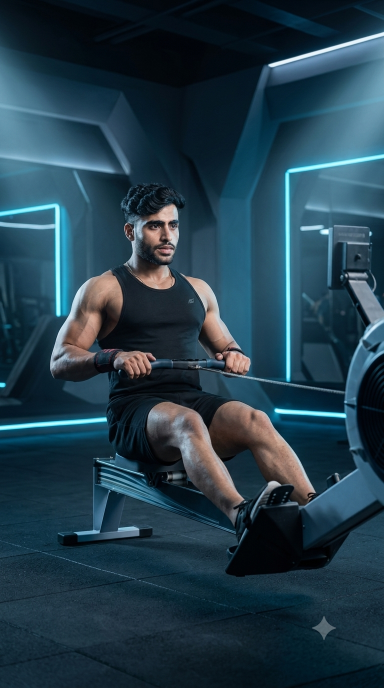

Primary Muscles
Back & Legs
Build Full-Body Strength, Endurance & Cardiovascular Fitness
The Rowing Machine is a low-impact, full-body cardio exercise that combines powerful leg drive, core stability, and upper-body pulling mechanics to improve cardiovascular endurance, muscular strength, and calorie expenditure. It primarily targets the quadriceps, glutes, hamstrings, latissimus dorsi, rhomboids, biceps, shoulders, and core while enhancing coordination and overall conditioning. Whether you're aiming to lose fat, improve athletic performance, increase endurance, or develop total-body fitness, the Rowing Machine provides one of the most efficient cardiovascular workouts available.

Back & Legs
Rowing Machine
Beginner
Cardio Machine Exercise
Discover the primary and supporting muscles activated during the Rowing Machine exercise. This low-impact, full-body workout builds cardiovascular endurance, muscular strength, and coordination by engaging the legs, back, arms, shoulders, and core throughout every rowing stroke.
The quadriceps and glutes generate the majority of the power during the leg drive, while the latissimus dorsi pulls the handle toward the body, producing an efficient and powerful rowing stroke.
The upper back muscles retract the shoulder blades while the biceps assist the pulling phase, improving posture, upper-body strength, and rowing efficiency.
The core stabilizes the torso, maintains spinal alignment, and efficiently transfers force from the legs to the upper body throughout each rowing stroke.
The rear shoulders and spinal erectors stabilize the upper body, maintain proper posture, and help produce smooth, controlled rowing mechanics while reducing unnecessary stress on the lower back.
Discover how the Rowing Machine improves cardiovascular endurance, builds full-body strength, burns calories efficiently, enhances posture and coordination, protects the joints with low-impact movement, and develops total-body fitness through every rowing stroke.
Continuous rowing challenges the heart and lungs, increasing aerobic capacity, stamina, and overall cardiovascular fitness while supporting long-term health.
The Rowing Machine simultaneously trains the legs, back, shoulders, arms, and core, making it one of the most effective exercises for developing total-body strength.
By engaging multiple large muscle groups at the same time, rowing significantly increases calorie expenditure, supporting fat loss and metabolic conditioning.
Proper rowing technique strengthens the posterior chain, improves posture, and develops coordinated movement between the upper and lower body.
The smooth seated rowing motion places minimal stress on the knees, hips, and ankles, making it an excellent cardiovascular exercise for many fitness levels.
Rowing develops power, endurance, coordination, and work capacity, helping athletes perform better in sports, strength training, and other high-intensity activities.
Follow these step-by-step instructions to perform the Rowing Machine with proper technique. Focus on a powerful leg drive, stable core, controlled pulling motion, smooth recovery, and consistent breathing to maximize strength, endurance, and cardiovascular performance.
Sit on the rowing machine, secure your feet in the footrests, grip the handle with both hands, and keep your chest up, back straight, and core engaged before beginning the stroke.
Start with your shoulders relaxed and spine in a neutral position.
Push firmly against the footrests using your legs while keeping your arms straight. Allow your hips and knees to extend before involving the upper body.
Most of the rowing power should come from your legs, not your arms.
Once your legs are nearly straight, lean back slightly from the hips and pull the handle toward your lower ribs while squeezing your shoulder blades together.
Pull with your back muscles instead of relying only on your arms.
Extend your arms first, lean your torso slightly forward, and then bend your knees to smoothly return to the starting position without losing posture.
Recover slowly and avoid rushing back to the start.
Continue rowing with smooth, consistent strokes while breathing rhythmically. Maintain proper technique and a controlled pace throughout the workout for maximum efficiency.
Prioritize stroke quality before increasing speed or resistance.
Avoid these common Rowing Machine mistakes to improve technique, power, cardiovascular performance, and full-body efficiency while reducing unnecessary stress on your lower back, shoulders, knees, and wrists. Proper rowing mechanics help maximize every stroke safely and effectively.
Beginning the stroke with your arms instead of your legs reduces power output and places unnecessary stress on the shoulders and elbows.
Drive with your legs first, then lean back slightly, and finish by pulling the handle toward your lower ribs.
A rounded spine reduces force production and increases the risk of lower back discomfort or injury during repetitive rowing strokes.
Keep your chest lifted, engage your core, and maintain a neutral spine throughout the entire movement.
Leaning too far backward at the end of the stroke wastes energy, disrupts rhythm, and places excessive stress on the lower back.
Finish with only a slight backward lean while keeping your core engaged and posture controlled.
Returning too quickly to the starting position breaks your rhythm, reduces stroke efficiency, and limits overall rowing performance.
Recover in a smooth, controlled manner by extending your arms first, then hinging at the hips, and finally bending your knees.
Follow these expert coaching tips to improve your Rowing Machine technique, generate more power with every stroke, maintain proper posture, and maximize cardiovascular endurance while rowing safely and efficiently.
Generate power by pushing through your legs before leaning back and pulling with your upper body. This sequence produces stronger, more efficient rowing strokes.
Legs first, arms last.
Maintain a straight back and engaged core throughout every stroke to improve power transfer and reduce unnecessary stress on the lower back.
Strong core, straight back.
Return to the starting position smoothly instead of rushing. A controlled recovery improves rhythm, efficiency, and stroke consistency.
Recover slowly, row powerfully.
Focus on smooth, controlled strokes instead of rowing as fast as possible. Consistent technique delivers better endurance, efficiency, and long-term performance.
Smooth strokes beat fast strokes.
Progress from learning proper rowing mechanics to developing full-body strength, cardiovascular endurance, power, and athletic performance. A structured progression helps maximize results while improving technique and reducing the risk of injury.
Learn the correct rowing sequence by driving with your legs, maintaining a neutral spine, engaging your core, and coordinating the pull and recovery phases smoothly.
Technique, posture, coordination, and stroke mechanics.
Row for longer sessions at a steady pace while maintaining proper technique to improve cardiovascular endurance, muscular stamina, and movement efficiency.
Endurance, conditioning, and stroke consistency.
Gradually increase the resistance or rowing intensity while maintaining efficient technique to develop greater full-body strength, power, and work capacity.
Strength, power, coordination, and rowing efficiency.
Incorporate interval training by alternating powerful rowing efforts with recovery periods to maximize calorie burn, cardiovascular fitness, endurance, and athletic performance.
Maximum conditioning, cardiovascular fitness, power, and endurance.
Find answers to the most common questions about the Rowing Machine, including muscles worked, weight-loss benefits, workout duration, beginner recommendations, and how to perform the exercise safely to improve strength, endurance, and cardiovascular fitness.
The Rowing Machine primarily targets the quadriceps, glutes, hamstrings, latissimus dorsi, and core while also engaging the rhomboids, trapezius, biceps, shoulders, and spinal erectors for a complete full-body workout.
Yes. The Rowing Machine is beginner-friendly because it is low-impact and allows you to control both the resistance and pace. Beginners should focus on mastering proper technique before increasing intensity.
Yes. The Rowing Machine burns a significant number of calories by engaging multiple muscle groups simultaneously, making it an excellent exercise for fat loss when combined with proper nutrition and consistent training.
Beginners can start with 10 to 15 minutes per session, while intermediate and advanced individuals may row for 20 to 45 minutes or perform interval training based on their fitness goals.
Yes. The seated rowing motion places minimal stress on the knees, hips, and ankles, making it an excellent option for improving cardiovascular fitness while reducing joint impact.
Most people can use the Rowing Machine three to five times per week as part of a cardio or full-body training program. Allow adequate recovery after high-intensity sessions to maximize performance and reduce fatigue.
Build full-body strength, cardiovascular endurance, muscular stamina, and overall conditioning by combining the Rowing Machine with these complementary cardio and functional exercises. Together they create a balanced training program suitable for every fitness level.


Continue building your endurance, burning calories, and improving cardiovascular health with our complete collection of cardio exercise guides. Learn proper technique, muscles worked, training tips, common mistakes, and progression strategies for every fitness level.